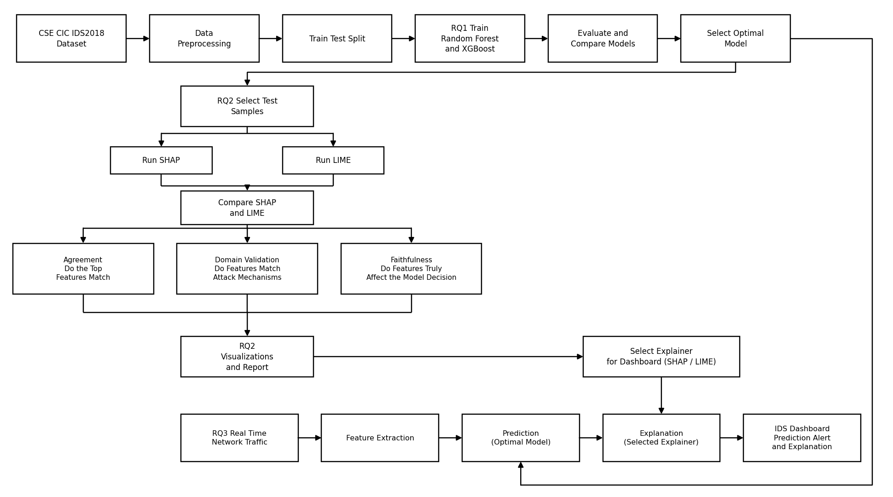

CẨM NANG TƯƠNG TÁC / TỔNG QUAN
EXPLAINABLE INTRUSION DETECTION · KLTN
Hiểu mô hình.
Hiểu cảnh báo.
Đi từ packet, flow, 78 feature đến Random Forest, XGBoost, 14 loại tấn công, SHAP, LIME và quy trình SOC. Học đến đâu có demo bấm thử ngay đến đó.
Lộ trình học gợi ý
BƯỚC 1Dữ liệuPacket → flow → 78 feature
BƯỚC 2Mô hìnhCây → Bagging → Boosting
BƯỚC 3Đo lườngPrecision, Recall, F1, mất cân bằng
BƯỚC 4Tấn công14 loại, mỗi loại một hoạt cảnh
BƯỚC 5Giải thíchSHAP, LIME, so sánh, đánh giá
Cách đọc nhãn trên mỗi demo
Mỗi chương theo 3 lớp: Hiểu nhanh → Demo bấm thử → Chi tiết kỹ thuật (mở rộng khi cần). Nhãn màu cho biết số liệu đến từ đâu:
01
DỮ LIỆU MẠNG
Từ packet đến flow
HIỂU NHANHMột lần mở website không tạo ra một kết nối mà tạo ra nhiều flow (DNS, TCP/HTTPS, API, CDN…). Mô hình IDS của dự án không dự đoán từng packet; nó dự đoán từng flow sau khi các packet cùng 5-tuple (IP nguồn, IP đích, cổng nguồn, cổng đích, giao thức) được gom lại.
CHI TIẾT KỸ THUẬT · 5-TUPLE, KẾT THÚC FLOW, VÌ SAO KHÔNG DỰ ĐOÁN TỪNG PACKET
5-tuple xác định một flow hai chiều: gói đi (forward) và gói về (backward) cùng thuộc một flow. Một flow kết thúc khi gặp cờ FIN hoặc RST, hoặc khi vượt timeout không có packet mới (CICFlowMeter dùng flow timeout nên flow rất dài bị cắt thành nhiều flow).
Một packet đơn lẻ gần như không mang đủ thông tin hành vi: chỉ cần thấy một gói SYN thì chưa thể phân biệt người dùng thật với quét cổng. Hành vi chỉ hiện ra khi nhìn chuỗi packet: nhịp thời gian, số lượng, kích thước, cờ TCP. Đó là lý do IDS dựa trên flow.
Hệ quả: hệ thống là near real time, không phải “chặn từ packet đầu tiên”, vì phải chờ flow đủ dữ liệu để tính feature.
02
CICFLOWMETER
78 feature được tính như thế nào?
HIỂU NHANHCICFlowMeter đọc các packet của một flow rồi biến chúng thành các con số: bao lâu, bao nhiêu packet, nhanh hay chậm, khoảng cách giữa các packet, bao nhiêu cờ RST/FIN… Kéo các packet trên timeline để xem feature thay đổi.
CHI TIẾT KỸ THUẬT · IAT, ĐƠN VỊ THỜI GIAN, 82 CỘT → 78 FEATURE
IAT (Inter-Arrival Time) là khoảng cách thời gian giữa hai packet liên tiếp. Flow IAT Mean là trung bình mọi cặp; Fwd IAT Mean chỉ xét chiều đi.
Lỗi đơn vị (RQ3): dữ liệu huấn luyện CICIDS2018 lưu thời gian theo micro giây, còn CICFlowMeter bản Python (dùng cho prototype) xuất theo giây. Nếu đưa thẳng vào mô hình, mọi feature thời gian nhỏ hơn thật 1.000.000 lần, mô hình dự đoán sai. Nút “µs ↔ s” ở demo trên mô phỏng chính vấn đề này.
82 → 78: file flows.csv từ prototype có 82 cột; một số cột định danh (IP, cổng nguồn, timestamp, Flow ID) bị loại, các cột còn lại phải đổi tên và sắp theo đúng schema 78 feature của mô hình (Schema Guard).
03
NỀN TẢNG MÔ HÌNH
Cây quyết định, bias và variance
HIỂU NHANHMô hình học quy luật từ 78 con số để chọn một trong 15 nhãn. Cây quyết định là viên gạch cơ bản: một chuỗi câu hỏi “feature X lớn hơn ngưỡng T không?”. Một cây đơn giản thì thiếu chính xác (bias cao); một cây quá sâu thì nhớ cả nhiễu (variance cao, overfitting).
Biến đầu vào mô tả một flow (78 biến).
Lớp đúng, dùng khi huấn luyện (15 lớp).
Lớp mô hình chọn khi suy luận.
Xác suất mô hình gán cho lớp đó.
CHI TIẾT KỸ THUẬT · GINI, TRAIN/VAL/TEST, DATA LEAKAGE
Gini — hiểu đơn giản: cứ hỏi "nếu bốc ngẫu nhiên 2 flow trong node này, chúng có cùng lớp không?" — node mà MỌI flow cùng một lớp (ví dụ toàn Benign) thì "sạch", Gini = 0; node trộn lẫn nhiều lớp thì Gini cao. Công thức: G = 1 − Σ pₖ² (pk = tỉ lệ lớp k trong node). Cây quyết định luôn chọn câu hỏi/ngưỡng chia nào làm Gini của hai node con giảm nhiều nhất — tức là chia xong thì mỗi bên "sạch" hơn trước.
Train / validation / test: train để học, validation để chọn tham số, test để báo cáo cuối. Lưu ý của dự án: test set đã được dùng để chọn cấu hình (không có validation riêng) nên số liệu hơi lạc quan; đây là hạn chế cần nêu.
Data leakage: khi thông tin của tập test “rò” vào quá trình học (ví dụ chia ngẫu nhiên các flow cùng một phiên tấn công vào cả train và test), kết quả đẹp hơn thực tế. CICIDS2018 có nhiều flow gần giống nhau trong cùng một đợt tấn công nên cần thận trọng khi so sánh với traffic mới.
04
ENSEMBLE LEARNING
Bagging và Boosting khác nhau ở đâu?
HIỂU NHANHBagging (Random Forest): nhiều cây sâu học độc lập rồi bỏ phiếu, giúp giảm variance. Boosting (XGBoost): nhiều cây nông học nối tiếp, mỗi cây sửa lỗi còn lại của các cây trước, giúp giảm bias. Kéo thanh bên dưới để thấy đường dự đoán thay đổi.
SO SÁNH
Trình tự
Bagging: song song, các cây không biết nhau.
Boosting: tuần tự, cây sau phụ thuộc cây trước.
SO SÁNH
Mục tiêu
Bagging: giảm variance của cây sâu.
Boosting: giảm bias, sửa phần lỗi còn lại.
SO SÁNH
Rủi ro
Bagging: khó overfit khi thêm cây.
Boosting: có thể overfit nếu quá nhiều cây hoặc learning rate lớn.
CHI TIẾT KỸ THUẬT · BOOTSTRAP, OOB, RESIDUAL
Bootstrap — hiểu đơn giản: để tạo "bộ dữ liệu riêng" cho mỗi cây, Random Forest bốc N mẫu NGẪU NHIÊN CÓ HOÀN LẠI từ N mẫu gốc (giống rút thăm rồi trả lại, có thể trúng trùng). Vì vậy mỗi cây chỉ thấy ~63,2% mẫu GỐC (một số mẫu bị bốc trùng nhiều lần, một số không được bốc); ~36,8% mẫu KHÔNG được bốc gọi là out-of-bag (OOB) — dùng chúng để tự ước lượng lỗi của cây đó mà không cần một tập validation riêng.
Boosting — hiểu đơn giản: cây sau được huấn luyện để SỬA PHẦN SAI của các cây trước, không học lại từ đầu. Công thức F_m(x) = F_{m−1}(x) + η · f_m(x) nghĩa là: dự đoán mới = dự đoán cũ + (một phần nhỏ, theo tốc độ học η) của cây mới. Cây mới f_m học trên residual (phần dư) — tức là CHÊNH LỆCH giữa nhãn thật và dự đoán hiện tại (y − F_{m−1}(x)) — nói cách khác, cây mới chỉ tập trung sửa đúng phần mà các cây trước còn đoán sai.
Demo trên dùng dữ liệu 1 chiều có nhiễu để mọi thứ nhìn thấy được; mô hình thật của dự án làm việc trong không gian 78 chiều.
05
MODEL DEEP DIVE
Random Forest, XGBoost và siêu tham số
HIỂU NHANHRandom Forest = rừng cây bỏ phiếu. XGBoost = chuỗi cây cộng điểm, có regularization (phạt độ phức tạp). Siêu tham số là các “núm vặn” do người huấn luyện chọn trước, không phải thứ mô hình tự học.
BAGGING MODEL
Random Forest
Mỗi cây nhìn một bootstrap sample và chỉ xét một tập con ngẫu nhiên feature ở mỗi lần chia. Lớp có nhiều phiếu nhất thắng.
ŷ = mode { tree₁(x), …, treeₙ(x) }
BOOSTING MODEL
XGBoost
Cây được thêm tuần tự. Với 15 lớp, mỗi vòng xây 15 cây (mỗi lớp một cây); điểm cộng dồn của từng lớp (raw margin) được qua softmax để thành xác suất.
Fₘ(x) = Fₘ₋₁(x) + η · fₘ(x)
CHI TIẾT KỸ THUẬT · XGBOOST OBJECTIVE, GAIN, SỐ CÂY THẬT
Mục tiêu — hiểu đơn giản: XGBoost không chỉ cố đoán đúng (phần Σ l(yᵢ,ŷᵢ) — tổng lỗi dự đoán), mà còn bị "phạt" nếu cây quá phức tạp (phần Σ Ω(f_k) — gọi là regularization). Công thức phạt Ω(f) = γT + ½λ‖w‖²: T là số lá của cây (cây nhiều lá hơn bị phạt nhiều hơn, qua tham số γ), w là điểm số gán cho mỗi lá (điểm lớn cũng bị phạt, qua λ). Mục đích: tránh cây học "quá khớp" (overfit) với dữ liệu huấn luyện.
Gain — hiểu đơn giản: trước khi quyết định tách một node thành hai, XGBoost tính thử "nếu tách thì mục tiêu ở trên cải thiện bao nhiêu" — con số đó gọi là Gain (công thức đầy đủ: ½[G_L²/(H_L+λ) + G_R²/(H_R+λ) − (G_L+G_R)²/(H_L+H_R+λ)] − γ). Nếu Gain ÂM (tách không giúp ích, chỉ làm cây phức tạp hơn vô ích) thì KHÔNG tách — đây chính là vai trò của tham số gamma: gamma lớn hơn thì cây "khó tính" hơn, ít chịu tách, cây đơn giản hơn.
Số cây thật của dự án: cấu hình n_estimators=100, 15 lớp, multi:softprob ⇒ 100 vòng × 15 = 1.500 cây, không phải 100 cây. Khi thuyết trình nên nói “100 vòng boosting”.
Cấu hình dự án (RQ1): max_depth=8, learning_rate=0.08, tree_method=hist. Tuning 7 cấu hình; depth 12 / lr 0,08 đạt F1 85,95% nhưng bản depth 8 được giữ làm mô hình giải thích.
06
ĐO LƯỜNG
Precision, Recall, F1 và dữ liệu mất cân bằng
HIỂU NHANHPrecision: trong số flow bị báo là tấn công, bao nhiêu đúng? Recall: trong số tấn công thật, bắt được bao nhiêu? F1: trung bình điều hòa của hai số này. Với dữ liệu mất cân bằng, Accuracy cao vẫn có thể vô dụng, nên dự án dùng Macro F1 (mỗi lớp đóng góp như nhau).
CHI TIẾT KỸ THUẬT · MACRO vs WEIGHTED, NGƯỠNG, FPR
Macro F1 = trung bình F1 của 15 lớp (85,81%); Weighted F1 nặng về lớp lớn (97,32%). Chênh lệch lớn chứng tỏ có lớp nhỏ/khó kéo điểm xuống (SlowHTTPTest, Infilteration, SQL Injection).
Ngưỡng cảnh báo: hạ ngưỡng ⇒ Recall tăng, báo động giả tăng; nâng ngưỡng ⇒ ngược lại. SOC chọn điểm cân bằng theo khả năng xử lý cảnh báo của analyst.
Sửa lỗi cần nhớ: con số 5,7481% ghi là “FPR” trong bảng RQ1 thực chất là tỉ lệ bỏ sót (tấn công bị đoán là Benign). Tỉ lệ báo động giả thật = 1.139 / 490.000 ≈ 0,2324%. Hãy dùng con số này khi trả lời hội đồng.
07
ATTACK ATLAS
14 loại tấn công, mỗi loại một hoạt cảnh
HIỂU NHANHBấm vào một thẻ để xem hoạt cảnh (kẻ tấn công làm gì với server), dấu vết flow (feature thay đổi ra sao so với traffic bình thường) và kết quả thật của mô hình dự án trên loại tấn công đó. Hoạt cảnh là minh họa; số F1, confusion và SHAP là số liệu thật.
CHI TIẾT KỸ THUẬT · CÁCH CHỌN LỚP “KHÓ”
Ba lớp cần đọc thận trọng nhất: Infilteration (Recall 15,98%, 12.026 flow bị đoán là Benign), SlowHTTPTest (Recall 37,64%, 1.082 flow bị đoán là FTP-BruteForce) và SQL Injection (chỉ 17 flow test, 9 flow trong cohort giải thích). Kết luận thống kê trên các lớp có rất ít mẫu không đủ mạnh.
08
EXPLAINABLE AI
SHAP: chia công cho từng feature
HIỂU NHANHMô hình cho mỗi lớp một điểm (raw margin). SHAP chia điểm đó thành base value + đóng góp của từng feature. Feature dương đẩy điểm lên về lớp đang giải thích, feature âm kéo xuống. Cộng tất cả lại thì ra đúng điểm của mô hình (additivity).
CHI TIẾT KỸ THUẬT · SHAPLEY, TREESHAP, CẤU HÌNH DỰ ÁN
Giá trị Shapley — hiểu đơn giản (Shapley 1953; Lundberg & Lee 2017): tưởng tượng 78 feature là 78 "người chơi" cùng góp công tạo ra một kết quả chung. Để biết CÔNG BẰNG mỗi người góp bao nhiêu, ta thử thêm từng người vào nhóm theo MỌI THỨ TỰ có thể, đo mức kết quả thay đổi mỗi lần thêm, rồi lấy TRUNG BÌNH — đó là giá trị Shapley của người đó. Với 78 feature, thử hết mọi thứ tự là con số khổng lồ (78! cách) — TreeSHAP là một thuật toán lách qua được việc này bằng cách khai thác cấu trúc CÂY của XGBoost, tính ra kết quả CHÍNH XÁC (không phải ước lượng) trong thời gian hợp lý.
Cấu hình dự án (run 20261009): shap.TreeExplainer, không gian margin thô (raw); additivity kiểm tra trên mẫu 300 flow của 700.000 flow test set, sai số tối đa 5,72e-6; trên cohort 1.339 flow, sai số tối đa 1,34e-5 — cả hai chỉ là sai số số học dấu phẩy động.
Đọc dấu: dương/âm chỉ nói feature đẩy điểm lớp lên/xuống, không chứng minh feature gây ra cuộc tấn công. SHAP giải thích mô hình, không giải thích thế giới thật.
09
EXPLAINABLE AI
LIME: một đường thẳng bắt chước mô hình
HIỂU NHANHLIME không nhìn vào bên trong mô hình. Nó tạo nhiều mẫu gần flow cần giải thích, hỏi mô hình dự đoán từng mẫu, rồi fit một mô hình tuyến tính đơn giản (mẫu gần được tính nặng hơn). Hệ số của mô hình tuyến tính chính là lời giải thích. Nếu đường thẳng bám kém, Local R² thấp và lời giải thích đáng ngờ.
CHI TIẾT KỸ THUẬT · KERNEL WIDTH, DISCRETIZE, VÌ SAO R² THẤP
Cấu hình dự án (chốt ở GĐ5, dò trên tập dev TRƯỚC khi xem cohort): LimeTabularExplainer (Ridge surrogate), kernel_width ≈ 3,312 (= 0,5× mặc định 6,624), num_samples = 1000, discretize_continuous = False, nền 2.000 dòng mẫu từ train set. Quy tắc chọn: Local R² trung vị cao nhất trên lưới 18 tổ hợp, hoà thì chọn chi phí thấp hơn — không theo mức giống SHAP.
Local R² trung vị: 0,258 trên tập dev (250 flow dùng để chọn cấu hình) nhưng 0,58 trên cohort đánh giá (1.339 flow), 86% flow cohort đạt R² ≥ 0,3 — cải thiện rõ so với cấu hình mặc định cũ (kernel_width=6,624, discretize=True: trung vị chỉ ≈0,068, 12,3% đạt ngưỡng). Việc tắt discretize_continuous và giảm kernel_width là hai thay đổi giúp R² tăng nhiều nhất.
Dù cải thiện, 0,258 trên tập dev vẫn dưới ngưỡng chất lượng (0,3) — đây là giới hạn thực của LIME trên dữ liệu mạng lệch mạnh này, không ép đẹp. Kết luận về LIME trong báo cáo luôn kèm cảnh báo độ tin cậy: không đọc trọng số LIME mà bỏ qua Local R².
10
RQ2 · TRUNG TÂM
SHAP và LIME trên cùng một flow
HIỂU NHANHHai phương pháp giải thích cùng mô hình, cùng flow, cùng lớp dự đoán. Câu hỏi: chúng có chọn cùng feature không (Jaccard), xếp cùng thứ tự không (Spearman), và có đồng ý về dấu không? Chọn lớp và k bên dưới; bảng dùng một flow thật của cohort ghép cặp (flow có Local R² trung vị của lớp).
CHI TIẾT KỸ THUẬT · KẾT QUẢ TỔNG HỢP SUB-RQ 2.1
| k | Jaccard@k | Spearman (toàn bộ 78 feature) | Đồng thuận dấu |
|---|---|---|---|
| 3 | 0,163 | 0,284 | 0,948 |
| 5 | 0,141 | 0,284 | 0,840 |
| 10 | 0,162 | 0,284 | 0,710 |
Trên cohort 1.339 flow. Spearman tính trên toàn bộ 78 feature (không chỉ Top-k) nên không đổi theo k — một phiên bản tính chỉ trên tập con Top-k từng cho kết quả ÂM giả do một sai lệch thống kê (selection bias) đã phát hiện và sửa khi chạy lại dự án; số liệu đúng ở trên cho thấy SHAP và LIME đồng thuận dương khi xét toàn cục. Kết luận: hai phương pháp chọn tập feature khá khác nhau (Jaccard thấp dù cao hơn ngẫu nhiên 2,3–6,8 lần), nhưng khi cùng chọn một feature thì thường đồng ý về hướng ảnh hưởng (giảm dần theo k vì các feature xếp hạng thấp dễ nhiễu hơn). Không so trực tiếp độ lớn vì SHAP dùng raw margin còn LIME dùng xác suất.
11
RQ2 · BẰNG CHỨNG
Đánh giá chất lượng lời giải thích
HIỂU NHANHMột lời giải thích “đẹp” chưa chắc “đúng”. Dự án kiểm bốn góc: tri thức miền (có khớp tín hiệu chuyên gia mong đợi không), ổn định (chạy lại có ra như cũ không), chịu nhiễu (nhiễu nhỏ có đổi lời giải thích không) và trung thực (thay feature được chọn thì mô hình có thật sự thay đổi không).
CHI TIẾT KỸ THUẬT · PROTOCOL VÀ CẢNH BÁO
Domain Precision@5: tỉ lệ Top-5 feature của explainer nằm trong bảng tín hiệu miền kỳ vọng (lập TRƯỚC khi xem Top-5, có 2 bản chặt/rộng). Macro (bản rộng): SHAP 0,243; LIME 0,129 — SHAP cao hơn LIME ở cả bản chặt và rộng, nhưng cả hai còn thấp vì mô hình dựa nhiều vào fingerprint môi trường.
Ổn định: cohort 1.339 flow; LIME chạy lại 10 seed (không phải 8) cho Jaccard@5 trung bình giữa các lần ≈ 0,58; SHAP (TreeExplainer) xác định tuyệt đối — 100% flow cho Top-5 giống y hệt khi chạy lại.
Chịu nhiễu: thêm nhiễu Gaussian lên cả 78 feature (biên độ = % độ lệch chuẩn TOÀN CỤC mỗi feature), đo trên toàn cohort. Jaccard@5 giữa giải thích gốc/nhiễu: SHAP 0,51 → 0,48 → 0,46 (sigma 1/5/10%); LIME 0,35 → 0,25 → 0,18 — SHAP ổn định hơn LIME rõ rệt ở mọi mức. Tỉ lệ model ĐỔI NHÃN dự đoán: 76,3% / 80,2% / 81,0% — cao hơn trực giác vì một số feature (Flow Duration, IAT...) có đuôi phân phối rất dài, "nhiễu 1%" theo độ lệch chuẩn toàn cục có thể là một bước nhảy tuyệt đối rất lớn so với giá trị thật của một flow — hạn chế của cách định nghĩa mức nhiễu, không phải lỗi tính toán.
Faithfulness: xoá Top-k feature, đặt về giá trị NỀN (trung vị toàn tập — thử cả 3 giá trị nền khác nhau), đo mức giảm XÁC SUẤT lớp dự đoán so với xoá k feature ngẫu nhiên, trên toàn cohort (coverage 100% ở mọi k). SHAP thắng LIME (so từng flow) 64,5% / 78,3% / 86,4% (k=3/5/10), kiểm định Wilcoxon p<0,001 ở cả 3 giá trị nền.
Khoảng trống còn lại: bảng tri thức miền do nhóm tự tổng hợp từ tài liệu gốc, không phải benchmark chính thức; LIME Top-5-theo-lớp tính trên cohort (≤100 flow/lớp) còn SHAP tính trên toàn 700k test set — khác quy mô; mức nhiễu nên đổi sang % theo giá trị TỪNG FLOW ở lần chạy sau; cohort lỗi (151 flow) quá nhỏ để khẳng định xu hướng.
12
ĐỌC KẾT QUẢ CẨN THẬN
Fingerprint môi trường và giới hạn của flow-based IDS
HIỂU NHANHMô hình có thể đạt F1 gần 100% mà vẫn dựa vào dấu vân tay của bộ dữ liệu (cổng đích, cửa sổ TCP ban đầu…) thay vì hành vi tấn công. Trên traffic thật, các dấu vân tay đó thay đổi nên báo động giả xuất hiện. Ngoài ra, 78 feature không đọc được nội dung (payload) nên SQL Injection / XSS cần WAF hoặc DPI.
Giải thích không phải nguyên nhân
SHAP/LIME cho biết mô hình đã dùng feature thế nào, không chứng minh feature gây ra cuộc tấn công.
Near real time, không phải packet đầu tiên
Phải chờ flow đủ dữ liệu để tính feature.
Traffic thật có thể lệch dataset
Đơn vị thời gian, schema và fingerprint môi trường làm mô hình báo sai.
Chưa có đánh giá bởi chuyên gia SOC
Domain Precision@5 là đối chiếu bảng tri thức, không phải đánh giá của chuyên gia.
13
SYSTEM · RQ3
IDS–SOC: từ packet đến cảnh báo có lý do
HIỂU NHANHMột flow đi qua Capture → CICFlowMeter → Schema Guard → XGBoost → TreeSHAP → Alert → SOC. Mỗi bước có thể lỗi; hệ thống phải báo lỗi rõ ràng thay vì âm thầm đưa dữ liệu hỏng vào mô hình. Bật lỗi ở demo bên dưới để thấy pipeline phản ứng.
Current Prototype: bắt flow → CSVProposed System: dự đoán, SHAP, dashboardNot Yet Validated: độ trễ end-to-end
Trạng thái: packet capture → flows.csv (136 flow × 82 cột) đã có prototype. Prediction, API, alert correlation và dashboard là hệ thống đề xuất. Mọi con số trong demo SOC là mô phỏng; web không chặn IP thật.
14
CHẾ ĐỘ ÔN THI
Flashcard, quiz và câu hỏi hội đồng
HIỂU NHANHBa cách ôn: lật flashcard thuật ngữ, làm quiz nhanh có giải thích, và đọc ngân hàng câu hỏi mà hội đồng hay hỏi (kèm gợi ý trả lời ngắn và chương liên quan).
Ngân hàng câu hỏi hội đồng
Thuật ngữ
Hình từ báo cáo dự án
Real Project Data